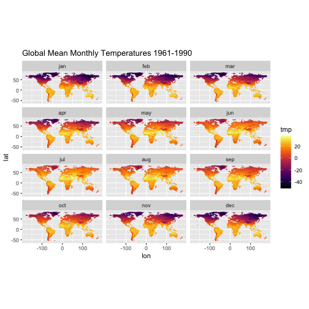
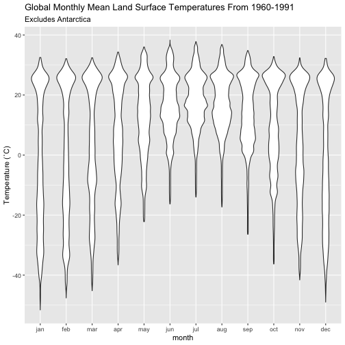

Introduction to getCRUCLdata
The getCRUCLdata package provides functions that automate importing CRU CL v. 2.0 climatology data into R, facilitate the calculation of minimum temperature and maximum temperature, and formats the data into a [base::data.frame()] object or a [base::list()] of [terra::rast()] objects.
CRU CL v. 2.0 data are a gridded climatology of 1961-1990 monthly means released in 2002 and cover all land areas (excluding Antarctica) at 10 arcminutes (0.1666667 arc degree) resolution. For more information see the description of the data provided by the University of East Anglia Climate Research Unit (CRU), https://crudata.uea.ac.uk/cru/data/hrg/tmc/readme.txt.
Changes to original CRU CL v. 2.0 data
This package automatically converts elevation values from kilometres to metres.
This package crops all spatial outputs to an extent of ymin = -60, ymax = 85, xmin = -180, xmax = 180. Note that the original wind data include land area for parts of Antarctica.
Using getCRUCLdata
Logical arguments are used to specify the climatology elements to retrieve and parse. All arguments default to FALSE. The create_CRU_*() functions require an additional parameter, dsn to be provided that states where the files are locally stored. The arguments for selecting the climatology elements for importing are:
pre Logical. Fetch precipitation (millimetres/month) from server and return in the data?
pre_cv Logical. Fetch cv of precipitation (percent) from server and return in the data?
rd0 Logical. Fetch wet-days (number days with >0.1 millimetres rain per month) and return in the data?
dtr Logical. Fetch mean diurnal temperature range (degrees Celsius) and return it in the data?
tmp Logical. Fetch temperature (degrees Celsius) and return it in the data?
tmn Logical. Calculate minimum temperature values (degrees Celsius) and return it in the data?
tmx Logical. Calculate maximum temperature (degrees Celsius) and return it in the data?
reh Logical. Fetch relative humidity and return it in the data?
sunp Logical. Fetch sunshine, percent of maximum possible (percent of day length) and return it in data?
frs Logical. Fetch ground-frost records (number of days with ground-frost per month) and return it in data?
wnd Logical. Fetch 10m wind speed (metres/second) and return it in the data?
elv Logical. Fetch elevation (and convert to metres from kilometres) and return it in the data?
dsn For
create_CRU_stack()andcreate_CRU_df()only. Local file path where CRU CL v. 2.0 .dat.gz files are located.
Creating tidy data frames for use in R
The get_CRU_df() function automates the download process and creates data frames of the climatology elements.
library(getCRUCLdata)
CRU_data <- get_CRU_df(pre = TRUE,
pre_cv = TRUE,
rd0 = TRUE,
tmp = TRUE,
dtr = TRUE,
reh = TRUE,
tmn = TRUE,
tmx = TRUE,
sunp = TRUE,
frs = TRUE,
wnd = TRUE,
elv = TRUE)
CRU_data
#> lat lon month dtr frs pre pre_cv rd0 reh sun tmp wnd elv
#> <num> <num> <fctr> <num> <num> <num> <num> <num> <num> <num> <num> <num> <num>
#> 1: 30.917 35.417 <NA> NA NA NA NA NA NA NA NA NA -260
#> 2: 31.083 35.417 <NA> NA NA NA NA NA NA NA NA NA -361
#> 3: 31.250 35.417 <NA> NA NA NA NA NA NA NA NA NA -336
#> 4: 31.417 35.417 <NA> NA NA NA NA NA NA NA NA NA -284
#> 5: 31.750 35.583 <NA> NA NA NA NA NA NA NA NA NA -248
#> ---
#> 6795146: 83.583 -30.083 dec 8.7 31 0.1 72.7 5.1 70.6 0 -31.3 5.6 283
#> 6795147: 83.583 -29.917 dec 8.6 31 0.1 72.8 4.9 70.6 0 -30.7 5.6 186
#> 6795148: 83.583 -29.750 dec 8.6 31 0.1 72.9 4.9 70.6 0 -30.8 5.6 195
#> 6795149: 83.583 -29.583 dec 8.6 31 0.1 73.0 5.0 70.6 0 -31.2 5.6 268
#> 6795150: 83.583 -29.417 dec 8.6 31 0.1 73.1 5.1 70.6 0 -31.5 5.6 328
#> tmx tmn
#> <num> <num>
#> 1: NA NA
#> 2: NA NA
#> 3: NA NA
#> 4: NA NA
#> 5: NA NA
#> ---
#> 6795146: -26.95 -35.65
#> 6795147: -26.40 -35.00
#> 6795148: -26.50 -35.10
#> 6795149: -26.90 -35.50
#> 6795150: -27.20 -35.80Perhaps you only need one or two elements, it is easy to create a tidy data frame of mean temperature only.
t <- get_CRU_df(tmp = TRUE)
t
#> lat lon month tmp
#> <num> <num> <fctr> <num>
#> 1: -59.083 -26.583 jan 0.2
#> 2: -58.417 -26.250 jan 0.6
#> 3: -58.417 -26.417 jan 0.4
#> 4: -55.917 -67.250 jan 8.0
#> 5: -55.750 -67.250 jan 8.2
#> ---
#> 6795140: 83.583 -36.083 dec -32.6
#> 6795141: 83.583 -36.250 dec -33.0
#> 6795142: 83.583 -36.417 dec -33.4
#> 6795143: 83.583 -36.583 dec -33.3
#> 6795144: 83.583 -36.750 dec -33.3Plotting data from the tidy dataframe
Now that we have the data, we can plot it easily using ggplot2 and the viridis package for the colour scale.
library(ggplot2)
library(viridis)
ggplot(data = t, aes(x = lon, y = lat, fill = tmp)) +
geom_tile() +
scale_fill_viridis(option = "inferno") +
coord_quickmap() +
ggtitle("Global Mean Monthly Temperatures 1961-1990") +
facet_wrap( ~ month, nrow = 4)
We can also generate a violin plot of the same data to visualise how the temperatures change throughout the year.
ggplot(data = t, aes(x = month, y = tmp)) +
geom_violin() +
ylab("Temperature (˚C)") +
labs(title = "Global Monthly Mean Land Surface Temperatures From 1960-1991",
subtitle = "Excludes Antarctica")
Creating terra raster stacks for use in R and saving for use in another GIS
For working with spatial data, getCRUCLdata provides a function that create lists of terra stacks of the data.
The get_CRU_stack() functions provide similar functionality to get_CRU_df(), but rather than returning a tidy data frame, it returns a list of terra::rast() objects for use in an R session.
The get_CRU_stack() function automates the download process and creates a terra::rast() object of the CRU CL v. 2.0 climatology elements. Illustrated here is creating a terra::rast() of all CRU CL v. 2.0 climatology elements available.
CRU_stack <- get_CRU_stack(
pre = TRUE,
pre_cv = TRUE,
rd0 = TRUE,
tmp = TRUE,
dtr = TRUE,
reh = TRUE,
tmn = TRUE,
tmx = TRUE,
sunp = TRUE,
frs = TRUE,
wnd = TRUE,
elv = TRUE
)
CRU_stack
#> $dtr
#> class : SpatRaster
#> dimensions : 870, 2160, 12 (nrow, ncol, nlyr)
#> resolution : 0.1666667, 0.1666667 (x, y)
#> extent : -180, 180, -60, 85 (xmin, xmax, ymin, ymax)
#> coord. ref. : lon/lat WGS 84
#> source : memory
#> names : jan, feb, mar, apr, may, jun, ...
#> min values : 2.3, 2.1, 2.2, 2.3, 1.8, 2.5, ...
#> max values : 22.7, 23.1, 23.5, 24.0, 24.0, 25.2, ...
#>
#> $elv
#> class : SpatRaster
#> dimensions : 870, 2160, 1 (nrow, ncol, nlyr)
#> resolution : 0.1666667, 0.1666667 (x, y)
#> extent : -180, 180, -60, 85 (xmin, xmax, ymin, ymax)
#> coord. ref. : lon/lat WGS 84
#> source : memory
#> name : elv
#> min value : -361
#> max value : 6486
#>
#> $frs
#> class : SpatRaster
#> dimensions : 870, 2160, 12 (nrow, ncol, nlyr)
#> resolution : 0.1666667, 0.1666667 (x, y)
#> extent : -180, 180, -60, 85 (xmin, xmax, ymin, ymax)
#> coord. ref. : lon/lat WGS 84
#> source : memory
#> names : jan, feb, mar, apr, may, jun, ...
#> min values : 0, 0.0, 0, 0, 0, 0, ...
#> max values : 31, 28.3, 31, 30, 31, 30, ...
#>
#> $pre
#> class : SpatRaster
#> dimensions : 870, 2160, 24 (nrow, ncol, nlyr)
#> resolution : 0.1666667, 0.1666667 (x, y)
#> extent : -180, 180, -60, 85 (xmin, xmax, ymin, ymax)
#> coord. ref. : lon/lat WGS 84
#> source : memory
#> names : jan, feb, mar, apr, may, jun, ...
#> min values : 0.0, 0.0, 0.0, 0.0, 0, 0.0, ...
#> max values : 910.1, 824.3, 727.3, 741.3, 1100, 2512.6, ...
#>
#> $rd0
#> class : SpatRaster
#> dimensions : 870, 2160, 12 (nrow, ncol, nlyr)
#> resolution : 0.1666667, 0.1666667 (x, y)
#> extent : -180, 180, -60, 85 (xmin, xmax, ymin, ymax)
#> coord. ref. : lon/lat WGS 84
#> source : memory
#> names : jan, feb, mar, apr, may, jun, ...
#> min values : 0, 0.0, 0, 0, 0.0, 0, ...
#> max values : 31, 28.2, 31, 30, 30.7, 30, ...
#>
#> $reh
#> class : SpatRaster
#> dimensions : 870, 2160, 12 (nrow, ncol, nlyr)
#> resolution : 0.1666667, 0.1666667 (x, y)
#> extent : -180, 180, -60, 85 (xmin, xmax, ymin, ymax)
#> coord. ref. : lon/lat WGS 84
#> source : memory
#> names : jan, feb, mar, apr, may, jun, ...
#> min values : 18.4, 14.6, 13.5, 13.4, 15.5, 10.2, ...
#> max values : 100.0, 100.0, 100.0, 100.0, 96.9, 95.1, ...
#>
#> $sun
#> class : SpatRaster
#> dimensions : 870, 2160, 12 (nrow, ncol, nlyr)
#> resolution : 0.1666667, 0.1666667 (x, y)
#> extent : -180, 180, -60, 85 (xmin, xmax, ymin, ymax)
#> coord. ref. : lon/lat WGS 84
#> source : memory
#> names : jan, feb, mar, apr, may, jun, ...
#> min values : 0.0, 0, 3.3, 4.3, 8.1, 6.6, ...
#> max values : 92.8, 93, 90.2, 93.1, 94.0, 98.9, ...
#>
#> $tmp
#> class : SpatRaster
#> dimensions : 870, 2160, 12 (nrow, ncol, nlyr)
#> resolution : 0.1666667, 0.1666667 (x, y)
#> extent : -180, 180, -60, 85 (xmin, xmax, ymin, ymax)
#> coord. ref. : lon/lat WGS 84
#> source : memory
#> names : jan, feb, mar, apr, may, jun, ...
#> min values : -51.6, -47.6, -45.2, -36.6, -22.2, -16.3, ...
#> max values : 32.5, 32.1, 32.4, 34.3, 36.0, 38.3, ...
#>
#> $wnd
#> class : SpatRaster
#> dimensions : 870, 2160, 12 (nrow, ncol, nlyr)
#> resolution : 0.1666667, 0.1666667 (x, y)
#> extent : -180, 180, -60, 85 (xmin, xmax, ymin, ymax)
#> coord. ref. : lon/lat WGS 84
#> source : memory
#> names : jan, feb, mar, apr, may, jun, ...
#> min values : 0.1, 0.1, 0.3, 0.4, 0.3, 0.2, ...
#> max values : 9.8, 9.6, 9.4, 9.0, 8.7, 8.6, ...
#>
#> $tmn
#> class : SpatRaster
#> dimensions : 870, 2160, 12 (nrow, ncol, nlyr)
#> resolution : 0.1666667, 0.1666667 (x, y)
#> extent : -180, 180, -60, 85 (xmin, xmax, ymin, ymax)
#> coord. ref. : lon/lat WGS 84
#> source : memory
#> names : jan, feb, mar, apr, may, jun, ...
#> min values : -55.05, -52.95, -48.75, -41.35, -28, -21.40, ...
#> max values : 26.30, 26.25, 27.40, 27.50, 30, 30.65, ...
#>
#> $tmx
#> class : SpatRaster
#> dimensions : 870, 2160, 12 (nrow, ncol, nlyr)
#> resolution : 0.1666667, 0.1666667 (x, y)
#> extent : -180, 180, -60, 85 (xmin, xmax, ymin, ymax)
#> coord. ref. : lon/lat WGS 84
#> source : memory
#> names : jan, feb, mar, apr, may, jun, ...
#> min values : -48.2, -43.35, -41.65, -32.45, -17.55, -11.50, ...
#> max values : 39.7, 38.40, 40.25, 41.85, 43.60, 45.95, ...The create_CRU_stack() function works in the same way with only one minor difference. You must supply the location of the files on the local disk (dsn) that you wish to import.
t <- create_CRU_stack(tmp = TRUE, dsn = "~/Downloads")Plotting terra rast objects of tmin and tmax
Because the stacks are in a list(), we need to access each element of the list individually to plot them, that’s what the [[1]] or [[2]] is, the first or second element of the list. Here using [[7]] we will plot the monthly average minimum temperature for all twelve months.
To plot only one month from the stack is also possible. Here we plot maximum temperature for July. Note that we use indexing [[2]] as before but append a $jul to the object. This is the name of the layer in the terra::rast(). So, we are telling R to plot the second object in the CRU_stack list, which is tmx and from that terra rast, plot only the layer for July.
plot(t[[8]]$jul)Saving terra objects to local disk
The terra rast stack objects can be saved to disk as geotiff files (others are available, see help for terra::writeRaster() and terra::writeFormats() for more options) on the Data directory with a tmn or tmx prefix to the month for a file name.
library(terra)
dir.create(file.path("~/Data"), showWarnings = FALSE)
writeRaster(
t$tmn,
filename = file.path("~/Data/tmn_", names(t$tmn)),
bylayer = TRUE,
format = "GTiff"
)
writeRaster(
t$tmx,
filename = file.path("~/Data/tmx_", names(t$tmn)),
bylayer = TRUE,
format = "GTiff"
)CRU CL v. 2.0 reference and abstract
Mark New (1,*), David Lister (2), Mike Hulme (3), Ian Makin (4) A high-resolution data set of surface climate over global land areas Climate Research, 2000, Vol 21, pg 1-25 (1) School of Geography and the Environment, University of Oxford, Mansfield Road, Oxford OX1 3TB, United Kingdom (2) Climatic Research Unit, and (3) Tyndall Centre for Climate Change Research, both at School of Environmental Sciences, University of East Anglia, Norwich NR4 7TJ, United Kingdom (4) International Water Management Institute, PO Box 2075, Colombo, Sri Lanka
ABSTRACT: We describe the construction of a 10-minute latitude/longitude data set of mean monthly surface climate over global land areas, excluding Antarctica. The climatology includes 8 climate elements - precipitation, wet-day frequency, temperature, diurnal temperature range, relative humidity,sunshine duration, ground frost frequency and windspeed - and was interpolated from a data set of station means for the period centred on 1961 to 1990. Precipitation was first defined in terms of the parameters of the Gamma distribution, enabling the calculation of monthly precipitation at any given return period. The data are compared to an earlier data set at 0.5 degrees latitude/longitude resolution and show added value over most regions. The data will have many applications in applied climatology, biogeochemical modelling, hydrology and agricultural meteorology and are available through the School of Geography Oxford (http://www.geog.ox.ac.uk), the International Water Management Institute “World Water and Climate Atlas” (https://www.iwmi.cgiar.org/) and the Climatic Research Unit (https://www.uea.ac.uk/groups-and-centres/climatic-research-unit).